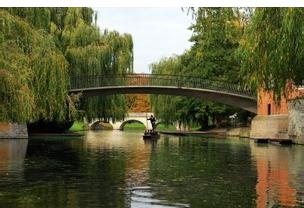
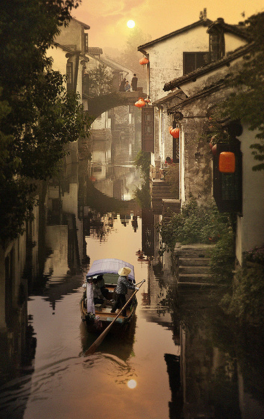
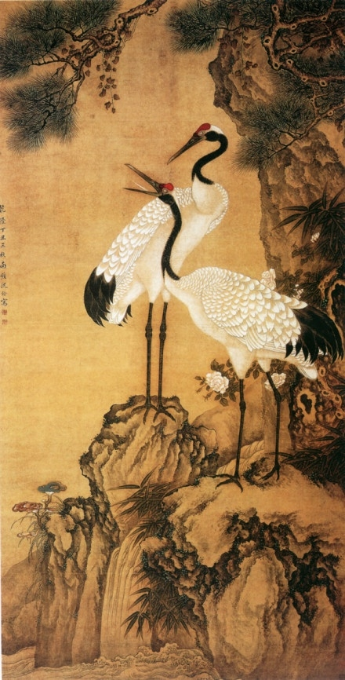
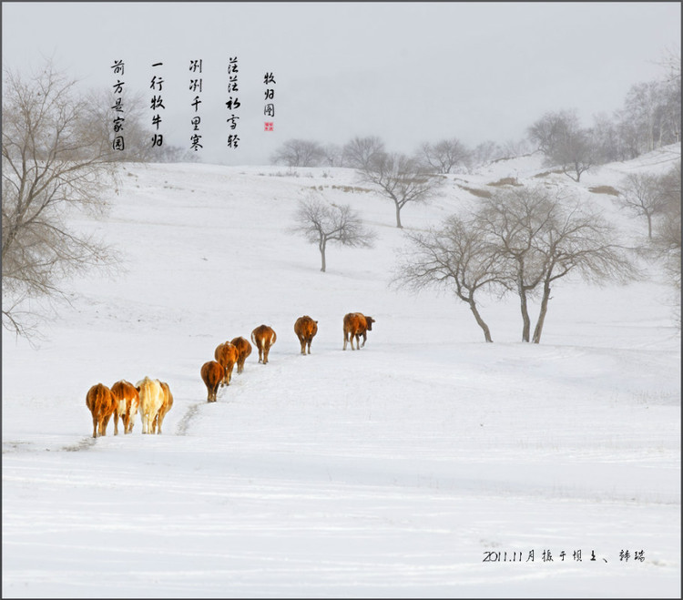
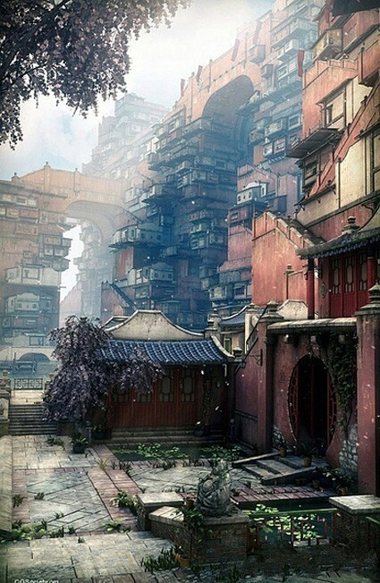
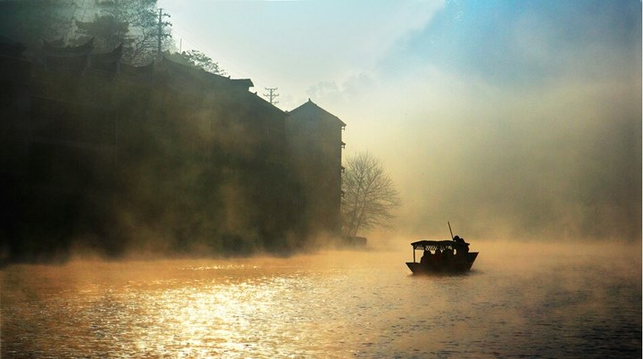
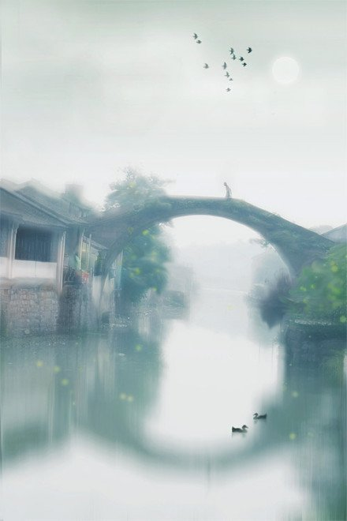

十三、《 独语》
我向海洋说：我怀念你
海洋应我
以柔和的潮声
我向森林说：我怀念你
森林回我
以悦耳的鸟鸣
我向星空说：我怀念你
星空应我
以静夜的幽声
我向山谷说：我怀念你
山谷回我
以溪水的淙鸣
我向你倾吐思念
你如石像
沉默不应
如果沉默是你的悲抑
你知道这悲抑
最伤我心

一、《再别康桥》
轻轻的我走了，正如我轻轻的来；
我轻轻的招手，作别西天的云彩。
那河畔的金柳，是夕阳中的新娘；
波光里的艳影，在我的心头荡漾。
软泥上的青荇，油油的在水底招摇；
在康河的柔波里，我甘心做一条水草！
那榆荫下的一潭，不是清泉，
是天上虹揉碎在浮藻间，沉淀着彩虹似的梦。
寻梦？撑一支长篙，向青草更青处漫溯，
满载一船星辉，在星辉斑斓里放歌。
但我不能放歌，悄悄是别离的笙箫；
夏虫也为我沉默，沉默是今晚的康桥。
悄悄的我走了，正如我悄悄的来；
我挥一挥衣袖，不带走一片云彩。
二、《雨巷》
撑着油纸伞，独自
彷徨在悠长、悠长
又寂寥的雨巷，
我希望逢着
一个丁香一样地
结着愁怨的姑娘。
她是有
丁香一样的颜色，
丁香一样的芬芳，
丁香一样的忧愁，
在雨中哀怨，
哀怨又彷徨；
她彷徨在这寂寥的雨巷，
撑着油纸伞
像我一样，
像我一样地
默默彳亍着
冷漠、凄清，又惆怅。
她默默地走近，
走近，又投出
太息一般的眼光
她飘过
像梦一般地，
像梦一般地凄婉迷茫。
像梦中飘过
一枝丁香地，
我身旁飘过这个女郎；
她默默地远了，远了，
到了颓圮的篱墙，
走尽这雨巷。
在雨的哀曲里，
消了她的颜色，
散了她的芬芳，
消散了，甚至她的
太息般的眼光
丁香般的惆怅。
撑着油纸伞，独自
彷徨在悠长、悠长
又寂寥的雨巷，
我希望飘过
一个丁香一样地
结着愁怨的姑娘。
三、《如果》
四季可以安排得极为黯淡
如果太阳愿意
人生可以安排得极为寂寞
如果爱情愿意
我可以永不再出现
如果你愿意
除了对你的思念
亲爱的朋友 我一无长物
然而 如果你愿意
我将立即使思念枯萎 断落
如果你愿意 我将
把每一粒种子都掘起
把每一条河流都切断
让荒芜干涸延伸到无穷远
今生今世 永不再将你想起
除了 除了在有些个
因落泪而湿润的夜里 如果
如果你愿意
四、《热爱生命》
我不去想是否能够成功
既然选择了远方
便只顾风雨兼程
我不去想能否赢得爱情
既然钟情于玫瑰
就勇敢地吐露真诚
我不去想身后会不会袭来寒风冷雨
既然目标是地平线
留给世界的只能是背影
我不去想未来是平坦还是泥泞
只要热爱生命
一切，都在意料之中
五、乡愁
小时候
乡愁是一枚小小的邮票
我在这头
母亲在那头
长大后
乡愁是一张窄窄的船票
我在这头
新娘在那头
后来啊
乡愁是一方矮矮的坟墓
我在外头
母亲啊在里头
而现在
乡愁是一湾浅浅的海峡
我在这头
大陆在那头

六、《爱情》
所有的路 都是为你而铺设
所有的桥 都是为你而架备
所有的亭宇 都是为你而营造
所有的愿望 都是为你而存在
你是我的所有 为此 我日夜忧愁
漫漫长路 只怕你眷恋身后
危危廊桥 只怕你惊于飞流
幽幽楼阁 只怕你凄怨逗留
小小心愿 只怕你未能实现
为你忧愁 然而 我愿意
我愿意是路标 假如你迷失了方向
我愿意是桥墩 假如你偏离了航道
我愿意是栋梁 假如你倾斜了轮廓
我愿意是期待 假如你遗忘了季节
如果是天意 最终 我该如何放弃
有一天 路标迁了 希望你能从容
有一天 桥墩断了 希望你能渡越
有一天 栋梁倒了 希望你能坚强
有一天 期待蔫了 希望你能理解

七、《致橡树》
我如果爱你——
绝不像攀援的凌霄花，
借你的高枝炫耀自己：
我如果爱你——
绝不学痴情的鸟儿，
为绿荫重复单调的歌曲；
也不止像泉源，
常年送来清凉的慰籍；
也不止像险峰，增加你的高度，衬托你的威仪。
甚至日光。
甚至春雨。
不，这些都还不够！
我必须是你近旁的一株木棉，
做为树的形象和你站在一起。
根，紧握在地下，
叶，相触在云里。
每一阵风过，
我们都互相致意，
但没有人
听懂我们的言语。
你有你的铜枝铁干，
像刀，像剑，
也像戟，
我有我的红硕花朵，
像沉重的叹息，
又像英勇的火炬，
我们分担寒潮、风雷、霹雳；
我们共享雾霭流岚、虹霓，
仿佛永远分离，
却又终身相依，
这才是伟大的爱情，
坚贞就在这里：
不仅爱你伟岸的身躯，
也爱你坚持的位置，脚下的土地。

八、《回答》
卑鄙是卑鄙者的通行证，
高尚是高尚者的墓志铭，
看吧，在那镀金的天空中，
飘满了死者弯曲的倒影。
冰川纪过去了，
为什么到处都是冰凌？
好望角发现了，
为什么死海里千帆相竞？
我来到这个世界上，
只带着纸、绳索和身影，
为了在审判前，
宣读那些被判决的声音。
告诉你吧，世界
我--不--相--信！
纵使你脚下有一千名挑战者，
那就把我算作第一千零一名。
我不相信天是蓝的，
我不相信雷的回声，
我不相信梦是假的，
我不相信死无报应。
如果海洋注定要决堤，
就让所有的苦水都注入我心中，
如果陆地注定要上升，
就让人类重新选择生存的峰顶。
新的转机和闪闪星斗，
正在缀满没有遮拦的天空。
那是五千年的象形文字，
那是未来人们凝视的眼睛。
九、《远和近》
你
一会看我
一会看云
我觉得
你看我时很远
你看云时很近

十、《献给黄昏的星》
黄昏的星从大地海洋升起
我站在黑夜的尽头
看到黄昏像一座雪白的裸体
我是天空中唯一一颗发光的星星
在这艰难的时刻
我仿佛看到了另一种人类的昨天
三个相互残杀的事物被怼到了一起
黄昏，是天空中唯一的发光体
星，是黑夜的女儿苦闷的床单
我，是我一生中无边的黑暗
在这最后的时刻，我竟能梦见
这荒芜的大地，最后一粒种子
这下垂的时间，最后一个声音
这个世界，最后的一件事情，黄昏的星
十一、《面朝大海, 春暖花开》
海子(1964～1989）
从明天起, 做一个幸福的人
喂马, 劈柴, 周游世界
从明天起, 关心粮食和蔬菜
我有一所房子, 面朝大海, 春暖花开
从明天起, 和每一个亲人通信
告诉他们我的幸福
那幸福的闪电告诉我的
我将告诉每一个人
给每一条河每一座山取一个温暖的名字
陌生人, 我也为你祝福
愿你有一个灿烂的前程
愿你有情人终成眷属
愿你在尘世获得幸福
我也愿面朝大海, 春暖花开
十二、《相信未来》
当蜘蛛网无情地查封了我的炉台
当灰烬的余烟叹息着贫困的悲哀
我依然固执地铺平失望的灰烬
用美丽的雪花写下：相信未来
当我的紫葡萄化为深秋的泪水
当我的鲜花依偎在别人的情怀
我依然固执地用凝霜的枯藤
在凄凉的大地上写下：相信未来
是呵!相信未来
这是最温暖的手臂
是啊!相信未来
这是最迷人的色彩
我要用手指——指那涌向天边的排浪
我要用手掌——托起那太阳的大海
我摇曳着曙光——那枝漂亮而温暖的笔杆
用孩子的笔体写下：相信未来
我之所以坚定地相信未来
是我相信未来人们的眼睛
他们有拨开历史风尘的睫毛
他们有看透岁月篇章的瞳孔
不管他们对于我们这些腐烂的皮肉
迷途的惆怅和失败的苦痛
是给予感动的热泪、深切的同情
还是给予轻蔑的微笑、辛辣的讽刺
我坚信他们对于我们的脊骨
那无数次的探索、迷途、失败和成功
一定会给予热情、公正、客观的评定
是的，我焦急地等待着他们的评定
亲爱的朋友啊，坚定地相信未来吧
相信不屈不挠的努力
相信战胜一切的年轻
相信永不衰竭的斗志
相信未来，相信生命
前程呵，一定光明
未来呵，一定美好
生命呵，永远前进
十三、《 独语》
我向海洋说：我怀念你
海洋应我
以柔和的潮声
我向森林说：我怀念你
森林回我
以悦耳的鸟鸣
我向星空说：我怀念你
星空应我
以静夜的幽声
我向山谷说：我怀念你
山谷回我
以溪水的淙鸣
我向你倾吐思念
你如石像
沉默不应
如果沉默是你的悲抑
你知道这悲抑
最伤我心

十四、《世界上最远的距离》
世界上最远的距离 不是 生与死的距离
而是 我站在你面前 你不知道我爱你
世界上最远的距离
不是 我站在你面前 你不知道我爱你
而是 爱到痴迷 却不能说我爱你
世界上最远的距离 不是 我不能说我爱你
而是 想你痛彻心脾 却只能深埋心底
世界上最远的距离 不是 我不能说我想你
而是 彼此相爱 却不能够在一起
世界上最远的距离 不是 彼此相爱
却不能够在一起 而是明知道真爱无敌
却装作毫不在意
世界上最远的距离
不是 树与树的距离
而是 同根生长的树枝 却无法在风中相依
世界上最远的距离 不是 树枝无法相依
而是 相互了望的星星 却没有交汇的轨迹
世界上最远的距离 不是 星星之间的轨迹
而是 纵然轨迹交汇 却在转瞬间无处寻觅
世界上最远的距离 不是 瞬间便无处寻觅
而是 尚未相遇 便注定无法相聚
世界上最远的距离
是鱼与飞鸟的距离 一个在天
一个却深潜海底

十五、《错误》
我打江南走过
那等在季节里的容颜如莲花的开落
东风不来，三月的柳絮不飞
你底心如小小寂寞的城
恰若青石的街道向晚
跫音不响，三月的春帷不揭
你底心是小小的窗扉紧掩
我达达的马蹄是美丽的错误
我不是归人，是个过客……
十六、《断章》
你站在桥上看风景，
看风景的人在楼上看你。
明月装饰了你的窗子，
你装饰了别人的梦。